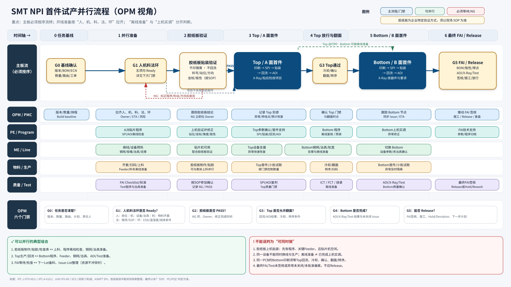
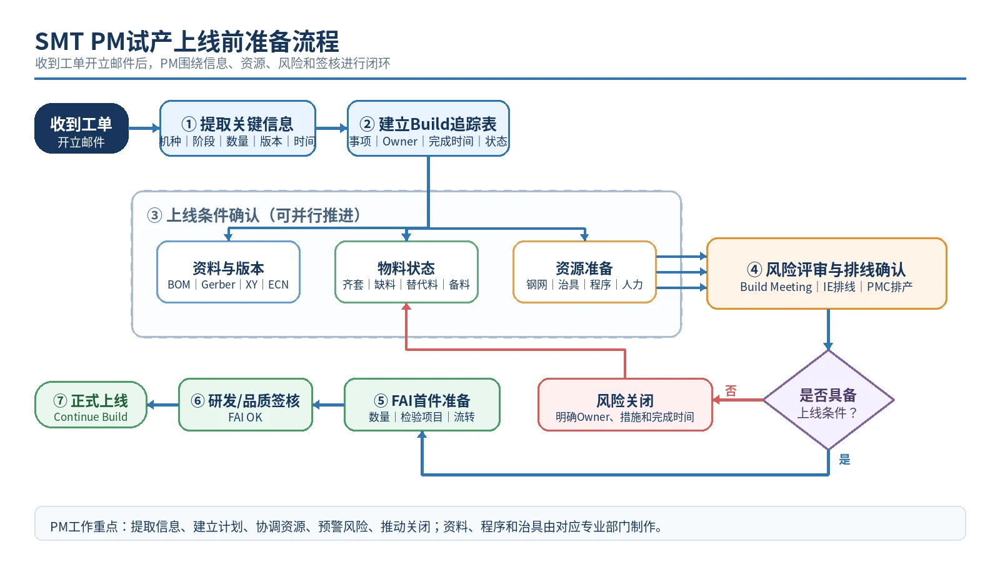
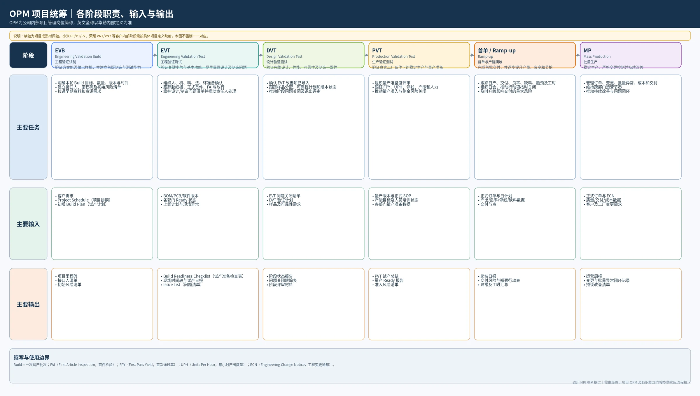

将复杂现场信息
转化为 清晰的决策依据
参与三类消费电子试产项目，重点积累项目推进、异常协调与数据复盘经验。以下精选真实工作成果，聚焦“如何判断问题、如何组织证据、如何形成可执行方案”。
经历与项目概况
在华勤 SMT 制造项目管理实习中，我参与平板、智能手表与智能门锁预研项目的试产推进。以下不按项目写流水账，而按工作产出和能力展开。
荣耀平板试产项目
参与支持试产，结合过站记录与现场事件整理时间线，开展异常窗口分析和会议复盘。
荣耀手表试产项目
独立负责 SMT 侧协调推进，重点关注需求变更、物料、程序、MES 与交付风险。
智能门锁预研项目
独立负责 SMT 侧协调推进，跟进物料、工装及现场执行问题，推动资源对齐。
生产时间分析与复盘
从“现场为什么慢”回到“哪些节点有证据”。这组成果复用既有复盘报告中的三张核心分析图逻辑，完整保留数据区分：过程窗口、局部 Hold 与真正的净 Delay 不能简单相加。
01 · 还原两天内的真实生产节奏
来源：平板试产复盘将物料、首件、两面生产与质量异常放到一条统一时间轴，并标出发生了并行处理的窗口。
图中显示的是来自原复盘材料的关键事件与过程窗口；非所有区间都是整线停机。具体日期、线体号、板件标识已隐藏。
核心判断： 一个跨越 4h59 的 T 面异常窗口，不能直接写成“全线停线 4h59”。必须结合 B 面是否仍在生产、首件调试时间和系统记录判定实际影响。
02 · 按影响窗口排序
先量化，再判断是否为净损失；区分“值得追问”与“可以改善效率”的节点。
⚠ 部分条目是过程观察窗口而非净 Delay，图中条形长度不可直接相加。
03 · 用过站记录验证变化
选择不同板件样本对照 B→T 流转耗时，看出异常前后节拍的明显变化。
对照数据来自原 MES 图表；公开版使用匿名样本。长间隔是板件流转时间，仍需结合现场记录确认真实停线原因。
数据分析与可视化
从单个工单切换到跨项目的资源视角：平均值能描述常态，波动与极值才更接近真实排线压力。本章优先保留线体需求波动分析原稿的核心指标与热力图结构。
试产线体需求：平均稳定，峰谷剧烈
原报告：1–7月 · 初稿口径从日均需求、日最高值、月内峰谷差和高负荷天数四个维度看试产资源占用。
01 · 月度日均与峰谷区间
按原报告中的月度汇总数据可视化。展示均值与当月最大/最小的距离。
02 · 每日线体需求热力图
复用原报告逐日数据表的 1–7 月记录，按“每日占用线体数”上色，而非随意制作模拟格子。
因原稿逐日表与摘要汇总在部分月份存在统计差异，此热力图目前标记为“原始记录待复核”，不据此另外推导新的月度业绩结论。
八月欠料停线分析
8 月累计发生 12 次欠料停线，影响 249 小时。分别从责任部门和欠料类型两个角度，分析异常分布及主要影响因素。
01｜责任部门 · 停线次数
单位：次
部门 A：次数占比最高，50.0%
02｜责任部门 · 停线时长
单位：小时（h）
部门 B：时长占比最高，68.7%
03｜欠料类型 · 停线时长
单位：小时（h）
PCB 占 73.9%，为最主要影响项
分析结论 停线次数与累计时长的主要责任部门并不相同；PCB 欠料造成 184 小时影响，明显高于其他物料类别，适合作为物料齐套和风险预警的重点。
数据范围：2026 年 8 月；部门名称已匿名化。电子料／散料按原统计口径合并展示。
我把一次试产看作一条不断变化的依赖链：需要按顺序放行的主板流程，与可以提前并行的资源准备同时发生。项目协调的价值，是尽量让准备不成为临时等待。
主板按工艺顺序流转，
准备事项尽可能并行。
不把工单开立当作“已经能开线”，也不把每项资源分别 Ready 当作整个 Build Ready。通过任务基线、准备状态、设备限制与首件放行门禁，将计划转成可执行的节奏。
01｜一张图解释首件试产的并行逻辑
以我整理的 OPM 视角流程图为主视觉；下方仅提示最关键的边界，避免重复把整份 SOP 写成网页文字。

离线准备，可以前置
程序离线复核、钢网治具准备、人员到位、物料状态与质量检验条件，在不争用资源时可同步推进。
上机调试，必须满足前提
贴片机、印刷设备、SPI和AOI需要现场资源，不能把“程序正在准备”理解为“已经能上线”。
签核门禁，不可跨越
首件NG、质量未放行或偏离要求未获批准时，不能因排程紧张而跳过验证与Release。
02｜我如何把工单需求转成上线计划
围绕六个节点做责任与风险跟踪，OPM协调条件达成，专业判断仍由各对应工程与质量接口负责。
确认
齐套
与排线
放行
与交付
查看补充流程图 · 上线准备 / OPM 阶段职责

补充图：工单开立后的上线准备流程（仅作展开参考）

补充图：NPI 各阶段 OPM 的任务、输入与输出（通用参考框架）
不把“别人回复了”当作问题关闭，也不把“恢复生产”当作长期改善完成。下面精选两类真实记录，展示我如何理解风险的影响范围，并将现场问题转成有负责人、有节点的行动项。
夹治具面别不匹配：为什么问题在首件阶段才暴露？
来源：荣耀平板试产复盘资料；公开版隐藏具体线体、人名、工单与板件编号。关键时间节点用于复盘过程分析。
现场信号
首件阶段发现光板面别与炉载具 / 夹治具使用面不匹配，出现异常等待。
现场处置
经工程人员现场确认，通过临时调整夹具结构恢复生产。
复盘追问
产前是否完成面别识别、试装验证、责任确认？异常直接停线时长是多少？
下一步行动
推动明确夹具适用面别标识、上线前点检、改善负责人和验证证据。
两条线同时需要资源：仅确认“有工装”为什么不够？
来源：7月31日现场学习及异常复盘日报；该案例展示风险拆解方法，不宣称所有问题已经关闭。
记录到的风险组合
两线存在 Tray 盘共用冲突；替代盘未经充分适配验证；循环载具周转有限；特殊吸嘴也存在数量约束。单独看每个资源都“有”，合在一起却可能无法支持同时上线。
从“有无”升级为“可用性”
需要同时检查需求数量、可用数量、包装 / 尺寸兼容、线体并行时段、周转周期和备用方案；不可把替代方案等同于已验证可用方案。
统计需求
兼容性
等待风险
确认可执行方案
从现场响应到真实关闭
一套可迁移到不同异常场景的检查方式；不是公司正式SOP，也不表示所有案例已完成全部步骤。
试产准备表｜68项完整清单
| 序号 | 类别 | 事项 | 具体描述（脱敏） | 需完成时间 | 责任接口 |
|---|---|---|---|---|---|
| 01 | 人 | 贴片、手焊，飞线及X-Ray检测人力 | 手焊、批量维修属于额外作业需求，应在试产前与研发确认任务范围及作业指导。 | 试产启动前 | OPM / 基带提供作业指导书 |
| 02 | 人 | 线体IDL、DL人力资质审核 | 班组长、贴片员、印刷、目检是否符合在岗资质 | 试产启动前 | PQE / 平台质量稽查 |
| 03 | 人 | 特殊工艺上岗操作培训 | 特殊操作需要工艺按照SOP给员工培训，质量检查效果，达到作业能力标准后才能上岗作业，如钎焊 | 试产启动前 | PE/PQE/生产 |
| 04 | 人 | 工厂团队清单 | OPM: SIE: DFX: PQE: PE: TE: FAE: | 试产启动前 | PE/PQE/OPM |
| 05 | 人 | NPI团队清单 | NPI PM: NPI PE: 制造代表： | 试产启动前 | OPM / NPI |
| 06 | 人 | 后段人力预排 | TE提供测试所需人力，PE提供点胶、钎焊人力，OPM综合根据测试和辅料站位预排测试人力 | 试产启动前2天 | OPM |
| 07 | 人 | RD团队清单 | RD PM: MPM: RF： EE： SW： | 试产启动前 | PM/EE/RF / 研发PM |
| 08 | 人 | 客户跟线人员 | 确认客户端有哪些人会进行产线现场跟线，MD要提前对应进行准备 | 客户到厂前1天 | OPM / 各领域研发 |
| 09 | 机 | SMT贴片线体确定 | 按不同板件核对 SMT 贴片线体与资源安排（具体线号不公开）。 | 试产启动前3天 | FPM |
| 10 | 机 | SMT贴片夹治具及设备准备 | 夹治具及设备到料及点检验收完成：钢网、载具、裁板夹治具等 | 试产启动前3天 | PE |
| 11 | 机 | 设备保养、精度风险确认 | 核对设备保养、近期异常和精度风险。关注如贴片设备污染、分板精度偏差导致的质量隐患，由工程接口确认。 | 试产启动前 | ME/PE |
| 12 | 机 | 测试机台认证 | 提前将需要测试的对应地方整理好；layout规划+架设认证schedule | 试产启动前 | TE |
| 13 | 机 | 后段设备&特殊工艺设备 | 尤其注意激光分板设备资源冲突、后段设备资源、维修资源协调——后段人员提前协调 | 试产启动前 | FPM |
| 14 | 料 | SMT物料齐套 | 物料CTB齐套跟踪 | 该配置上线前 | OPM / PM/MPM |
| 15 | 料 | 重点管控物料清单 | 涉及到0或者极少数量Buffer的物料，需要RD PM在试产准备会议上提供清单 | 试产启动前 | OPM / PM/MPM |
| 16 | 料 | 烧录物料/盘装料特殊物料确认 | 烧录物料/盘装料等特殊物料产前确认并进行对应安排，如提前领料烧录验证；盘装料提前准备托盘和调试。物料发至边仓，TE对接跟进 | 试产启动前 | OPM / PM/MPM |
| 17 | 料 | 包材准备 | 单板出货研发/海外需求时，要准备相应包材（研发提包材领用单，边仓领取） | 试产启动前 | OPM / PM/MPM |
| 18 | 料 | 耗材需求准备 | 专用托盘需求数量并及时申请料号--PE；给商务报价--FPM | 试产启动前7天 | FPM&PE |
| 19 | 料 | 边仓备料 | 为仓库预留备料与上料窗口（原清单建议至少两个班次）；时间不足时对外预警并协调加急。 | 试产前1天 | OPM / PM |
| 20 | 料 | 库存旧料清理 | build前须将仓库不允许在本阶段消耗的旧料隔离掉，包含PCBA | 试产启动前 | OPM / PM/MPM |
| 21 | 料 | 产线改板PCB隔离 | 如果有改板，需要提前将产线调机板隔离 | 试产启动前 | FPM |
| 22 | 料 | 湿敏物料烘烤要求(烘烤清单） | 及时烘烤和保存（物料超期才需要烘烤）： Level 1: 无限制 Level 2: 1年 Level 2A: 4周 Level 3: 1周 Level 4：72H Level 5：48H Level 5A：24H | 试产启动前3天 | MFG |
| 23 | 料 | 辅料 | PE输出锡膏、胶水等辅料资料信息（生产前一个班次回温，开班领出，任何异常开班反馈）。PE、QE检查，生产上线前确认 | 试产启动前半天 | PE/PQE |
| 24 | 料 | 上料表上传 | 配置上线前程序需将料表上传MES，边仓根据料表信息备料上料，打印纸质版上料表给到产线进行核料 | 配置上线前 | 程序/边仓 |
| 25 | 料 | 物料配置 | 对多板组合等特殊配置确认 BOM 物料配置，尤其关注 FPC 与子板搭配，防止错料。 | 试产启动前 | OPM / 研发PM |
| 26 | 料 | 验证单释放边仓 | 需求PE打印出验证单释放给边仓领取验证料 | 试产启动前 | PM/PE/边仓 |
| 27 | 料 | 研发借板需登记+锁板，提领用单 | 锁板是为了归还主板后产线目检。若FATP反馈有不良可以先排查是否有借出记录 | — | FPM/PQE / 研发PM |
| 28 | 料 | 备料需求下发 | BOM、准备表及关联工单资料按时推送内部系统，通知物控下发备料需求，并提前释放验证资料。 | 试产启动前3天 | OPM / 研发PM/物控 |
| 29 | 料 | PCBA半成品出货 | 出货allocation，出组装/客户，出货表提前释放给OPM和仓库 | 试产启动前 | 仓库/OPM / 研发PM |
| 30 | 料 | 测试站位辅料 | 试产阶段测试站位辅料（如OTG、U盘等）由NPI、TE提供 | 测试开始前 | TE/生产/OPM / NPI |
| 31 | 料 | PCBA库存管理确认 | 仓库有无上阶段/同阶段同料号板，如何避免发板错误导致组装投入异常。（镭雕＋入库＋领板 标识配置名） 仓库入库后PCBA是否账实一致，组装需求/研发需求仓库是否清楚 | 试产过程中 | FPM/仓库 |
| 32 | 料 | 调机板/炉温板/金板需求 | 炉温板需求提前和工程(PE ME TE)确认，提前确认数量。注意在KO meeting中向研发提出工厂会有样板/金板需求，要求研发在PCB投板知会制造端，制造端讲制造诉求提供给RD PM，保留拼板等特殊要求 | 试产启动前 | FPM / NPI |
| 33 | 料 | 一个料号对应几种特殊标识 | 建议研发拉通手提上线，避免错漏混，手提上线要求研发现场跟进 | 试产启动前 | FPM / PM |
| 34 | 料 | 手提物料 | 特殊手提验证料如缺少正常入库或追溯标识（DID），须提前确认物料交接、特殊系统上线方案及书面审批，并同步相关接口。内部具体系统操作已隐去。 | 试产启动前 | OPM/MES / 研发PM |
| 35 | 料 | 治具和图纸 | 要求NPI PE、PE、供应商三方核对 | 试产启动前1天 | PE/OPM / NPI PE |
| 36 | 法 | 主板/小板连板数 | 拼版数过多需考虑是否能正常镭雕/是否会影响生产条码/是否会超设备轨道上限；若无法正常镭雕，贴纸质条码，下阶段要求研发改进 | 试产启动前 | PE |
| 37 | 法 | 试产配置&料号 | 试产配置创建&料号申请--->下发工单 | 试产启动前3天 | PM |
| 38 | 法 | 研发资料清单下发时间 | BOM: 上线前3天 基带 GERBER文件：上线前14天 钢网文件：上线前14天 基带 坐标文件：上线前14天 基带 拼版文件：上线前14天 基带 器件位号图：上线前14天 基带 原理图：上线前7天 基带 3D图纸：确认图纸物料和BOM是否有偏差，有偏差需要专业人员评估风险 基带 ECN：上线前7天 基带 | 试产启动前 | PE/TE/OPM / 研发PM |
| 39 | 法 | 防错料 | 依据 BOM 与验证资料核对 PCB 防错料信息，涉及烧录或料号变化时须再次确认标识。 | 试产启动前 | MES |
| 40 | 法 | 夹治具清单商务approve | PE需将夹治具清单给到OPM/商务，除非时间很紧，也需要客户/NPI approve后才能下单 | 夹具下单前 | PE/PM |
| 41 | 法 | 夹治具准备表 | 包含下单时间+到货时间+架设时间+认证时间+客户approve时间 | 试产启动前 | PE/TE |
| 42 | 法 | 试产准备表&关联 | 准备表创建&推送关联 | 试产启动前 | OPM |
| 43 | 法 | 测试软件下发 | 测试启动前研发需要下发测试脚本，要求研发释放邮件 | 试产启动前1天 | TE / 研发 软件 |
| 44 | 法 | 验证单归档锁定 | 验证资料按要求归档并书面同步；临时变更需通知相关接口，涉及物料变化须同步物控及仓库。 | 试产启动前1天 | PM / 研发PM |
| 45 | 法 | 叉板管控 | 来料上线需要确认叉板数量以及是否做好标识，切勿在叉板上打件，避免物料不足，账务对不上 | 试产启动前 | PE |
| 46 | 法 | 客户料号不能为空（工单平台 料号） | 内部工单平台的料号字段需完整，缺失时按规则确认处理方式，避免开单报错。 | 试产启动前 | 计划 / 研发PM |
| 47 | 法 | 计划/MES维护工单 | 计划与系统接口确认线体维护、工单发布及基础信息正确。 | 试产启动前 | 计划/MES |
| 48 | 法 | 手焊SOP | 提供手焊SOP，明确焊接位置、物料图片及料号等信息 Check | 手焊启动前 | EE&RF&PE |
| 49 | 法 | SOP审核 | 测试SOP须PE与QE审核，确认本次新增及删减差异物料及制程 Check | 试产启动前 | PE&PQE |
| 50 | 法 | 工艺流程 | SMT贴片及测试工艺流程确认 Check | 试产启动前 | PE/TE/HWTE |
| 51 | 法 | 特殊工艺/设备需求 | 特殊工艺（钎焊）管控（风险/进度/良率） | 试产启动前 | PE/DFX |
| 52 | 法 | 钢网/刮刀/锡膏型号确认 | PE需提前与MES确认好，让MES维护正确的型号，避免试产过程中出现报错的现象 | 配置上线前 | PE |
| 53 | 法 | MES流程验证 | 有更新的工艺流程需开虚拟工单在线试跑验证，并且质量进行认证，MES、HWTE提供虚拟工单验证报告，虚拟工单跑完后进行关单 | 试产启动前 | SIE/PQE |
| 54 | 法 | 质量要求 | 一次良率、最终良率目标由对应专业接口确认；原表并无实际目标数值。 | 测试启动前 | PM |
| 55 | 法 | 试产变更评审 | 输出checklist并和团队评审 | — | PM/SIE |
| 56 | 法 | 目检检验标准 | 需要和FATP核对，研发在试产启动前释放目检标准 | 试产启动前 | PQE / 组装PQE |
| 57 | 环 | 产线5S整理 | 注意提前做好线体5S | 试产启动前 | FPM |
| 58 | 环 | ESD/温湿度 | 试产启动前做好ESD和温湿度检查，禁止裸手拿板 | 试产启动前 | PQE |
| 59 | 环 | 开线readiness checklist | 按开线准备要求检查作业环境与质量条件，特殊线体按相应规范处理。 | 试产启动前 | PQE |
| 60 | 环 | layout规划 | 根据process flow准备对应的layout，尤其涉及CCD、点焊、UV胶等特殊工艺。IE输出后段站位图纸 | 试产启动前 | IE |
| 61 | 环 | 线体保密工作 | 特殊线体按制度完成认证与信息安全报备，内部代号和审批细节不公开。 | 试产启动前 | — |
| 62 | 其他 | 上阶段LL宣讲 | 上阶段运行过程中的痛点问题进行宣导，该阶段改善 | 试产结束后 | OPM |
| 63 | 其他 | 上阶段工时确认 | 上阶段试产工时未完成确认，本阶段不允许启动 | 试产启动后 | OPM / RD PM |
| 64 | 其他 | 工单平台信息确认 | 核对工单平台中的客户料号、SN 号段等必要字段，实际编号不公开。 | 试产启动前 | OPM / PM |
| 65 | 其他 | 首件测试需求 | 需要注意板子首件是否先预留给基带测试后，再余板正常贴片 | — | 生产/IPQC/工艺 / 基带/PM |
| 66 | 其他 | MIL更新 | QE和相关领域针对试产问题进项更新，分析并对此做出对应的改善 | 试产过程中 | SIE/PQE / QE |
| 67 | 其他 | 工单数量合理性 | 工单数量÷拼板数是否为整数，非整数要求研发修改数量/同意超领PCB（叉板超领），提前告知研发准备buffer | 试产启动前 | OPM / 研发PM |
| 68 | 其他 | 夹治具数量 | 过炉夹治具保持在2~3轮能够打完 | 试产启动前 | OPM, PE / NPI PE，研发PM |
这是团队协作使用的准备清单。我在产前逐项核对事项的适用性与准备情况，并联系相关接口跟进缺口。产前核对不能保证产中不会出现新的变化或临时异常。
产中跟进｜Excel 与沟通记录
| 跟进事项 | 我主要做什么 | 工作记录 |
|---|---|---|
| 01试产物料齐套 | 查看缺口、联系物控或研发接口、记录更新 | Excel 跟进表 |
| 02上线前准备 | 核对工单、验证资料、资源准备的进展 | 准备清单 |
| 03生产节点 | 跟进首件、生产进度及临时安排变化 | 节点 / 日报 |
| 04现场异常 | 确认情况、联系对应接口、跟进反馈 | 问题清单 |
| 05阶段交接 | 整理项目情况、未完成事项和注意点 | 交接文档 |
研发问题清单｜试产后复盘
检查适用性、准备状态；跟进已知缺口
已有检查仍无法覆盖所有现场突发情况
回顾问题原因，提出下一阶段改进建议
上述六类为我在试产结束后根据问题清单整理的分类，不等于产前就已全部识别，也不表示每项问题都已完成长期整改。
案例：特殊物料上线条件未提前同步
逐项核对准备清单、跟进未完成事项、处理现场异常、联系接口并记录问题。
把易遗漏的特殊条件、资料变更和执行范围确认纳入下一次试产的重点提醒。
所有案例均经概括与脱敏；专业技术判断与正式结案由相应接口负责。检查清单能帮助提前管理已知风险，但不能保证所有临时异常都不会发生。